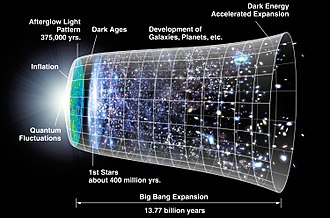
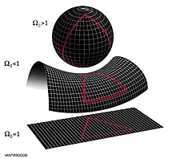
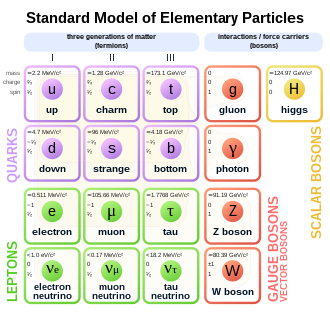

The Universe
The universe is all of space and time and their contents, including planets, stars, galaxies, and all other forms of matter and energy. The Big Bang theory is the prevailing cosmological description of the development of the universe. According to this theory, space and time emerged together 13.787±0.020 billion years ago, and the universe has been expanding ever since. While the spatial size of the entire universe is unknown, the cosmic inflation equation indicates that it must have a minimum diameter of 23 trillion light years, and it is possible to measure the size of the observable universe, which is approximately 93 billion light-years in diameter at the present day.
The earliest cosmological models of the universe were developed by ancient Greek and Indian philosophers and were geocentric, placing Earth at the center. Over the centuries, more precise astronomical observations led Nicolaus Copernicus to develop the heliocentric model with the Sun at the center of the Solar System. In developing the law of universal gravitation, Isaac Newton built upon Copernicus's work as well as Johannes Kepler's laws of planetary motion and observations by Tycho Brahe.
Further observational improvements led to the realization that the Sun is one of hundreds of billions of stars in the Milky Way, which is one of a few hundred billion galaxies in the universe. Many of the stars in a galaxy have planets. At the largest scale, galaxies are distributed uniformly and the same in all directions, meaning that the universe has neither an edge nor a center. At smaller scales, galaxies are distributed in clusters and superclusters which form immense filaments and voids in space, creating a vast foam-like structure. Discoveries in the early 20th century have suggested that the universe had a beginning and that space has been expanding since then at an increasing rate.
According to the Big Bang theory, the energy and matter initially present have become less dense as the universe expanded. After an initial accelerated expansion called the inflationary epoch at around 10−32 seconds, and the separation of the four known fundamental forces, the universe gradually cooled and continued to expand, allowing the first subatomic particles and simple atoms to form. Dark matter gradually gathered, forming a foam-like structure of filaments and voids under the influence of gravity. Giant clouds of hydrogen and helium were gradually drawn to the places where dark matter was most dense, forming the first galaxies, stars, and everything else seen today.
From studying the movement of galaxies, it has been discovered that the universe contains much more matter than is accounted for by visible objects; stars, galaxies, nebulas and interstellar gas. This unseen matter is known as dark matter (dark means that there is a wide range of strong indirect evidence that it exists, but we have not yet detected it directly). The ΛCDM model is the most widely accepted model of the universe. It suggests that about 69.2%±1.2% of the mass and energy in the universe is a cosmological constant (or, in extensions to ΛCDM, other forms of dark energy, such as a scalar field) which is responsible for the current expansion of space, and about 25.8%±1.1% is dark matter. Ordinary ('baryonic') matter is therefore only 4.84%±0.1% of the physical universe. Stars, planets, and visible gas clouds only form about 6% of the ordinary matter.
There are many competing hypotheses about the ultimate fate of the universe and about what, if anything, preceded the Big Bang, while other physicists and philosophers refuse to speculate, doubting that information about prior states will ever be accessible. Some physicists have suggested various multiverse hypotheses, in which our universe might be one among many universes that likewise exist.
Definition
The physical universe is defined as all of space and time (collectively referred to as spacetime) and their contents. Such contents comprise all of energy in its various forms, including electromagnetic radiation and matter, and therefore planets, moons, stars, galaxies, and the contents of intergalactic space. The universe also includes the physical laws that influence energy and matter, such as conservation laws, classical mechanics, and relativity.
The universe is often defined as "the totality of existence", or everything that exists, everything that has existed, and everything that will exist. In fact, some philosophers and scientists support the inclusion of ideas and abstract concepts—such as mathematics and logic—in the definition of the universe. The word universe may also refer to concepts such as the cosmos, the world, and nature.
Particles
Ordinary matter and the forces that act on matter can be described in terms of elementary particles. These particles are sometimes described as being fundamental, since they have an unknown substructure, and it is unknown whether or not they are composed of smaller and even more fundamental particles. Of central importance is the Standard Model, a theory that is concerned with electromagnetic interactions and the weak and strong nuclear interactions.
The Standard Model is supported by the experimental confirmation of the existence of particles that compose matter: quarks and leptons, and their corresponding "antimatter" duals, as well as the force particles that mediate interactions: the photon, the W and Z bosons, and the gluon.
The Standard Model predicted the existence of the recently discovered Higgs boson, a particle that is a manifestation of a field within the universe that can endow particles with mass. Because of its success in explaining a wide variety of experimental results, the Standard Model is sometimes regarded as a "theory of almost everything". The Standard Model does not, however, accommodate gravity. A true force-particle "theory of everything" has not been attained.
Back to top ↑